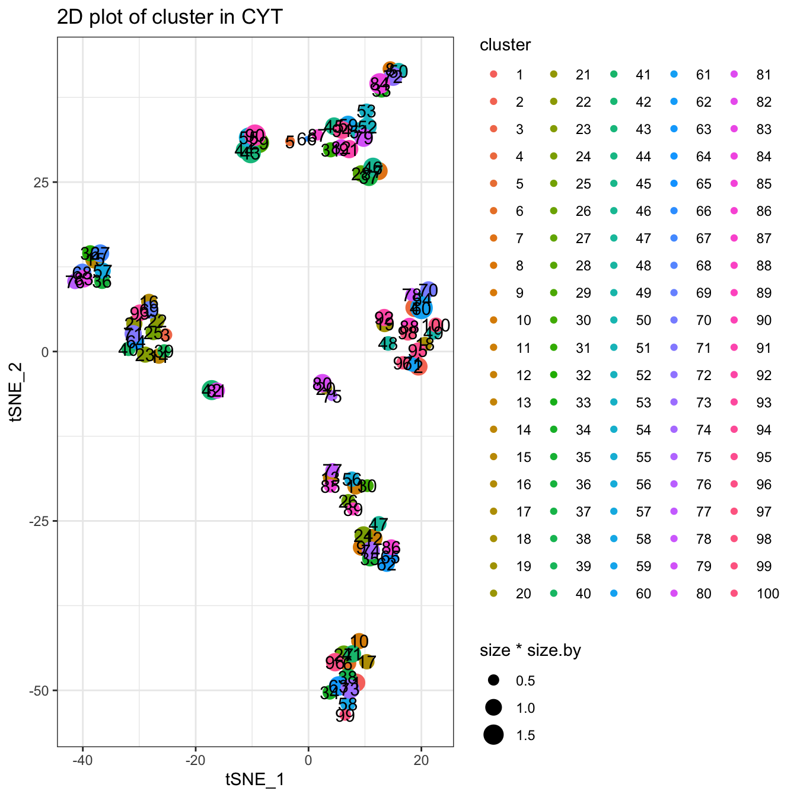
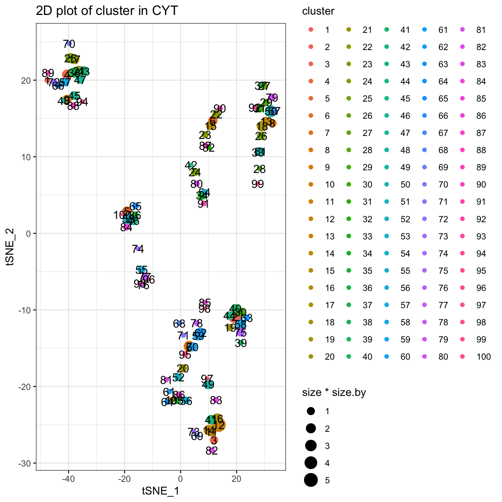
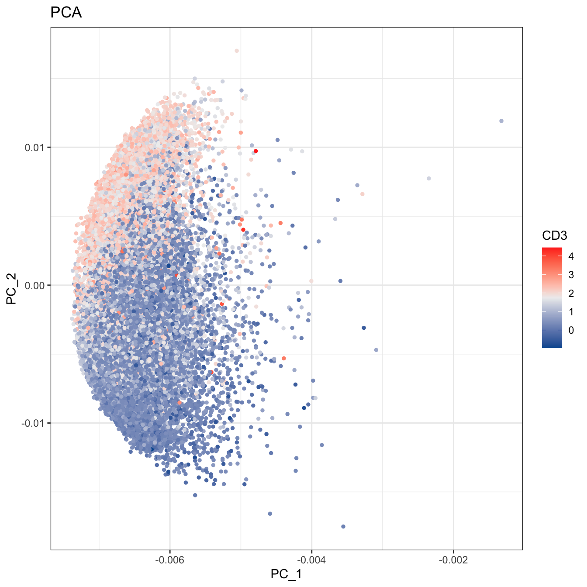

Chapter 3 Trajectory Inference (TI)
In this chapter, we will show you the detailed procedures to perform Trajectory Inference (TI) analysis using CytoTree.
The data in this chapter can be download from GitHub via git clone https://github.com/JhuangLab/CytoTree-dataset.git.
And through this chapter, you will learn:
- Performing preprocessing using
CytoTree.
- Performing preprocessing using
- Performing preprocessing using other packages.
- Clustering in
CytoTree.
- Clustering in
- Dimensionality reduction in
CytoTree.
- Dimensionality reduction in
- How to build the tree-shapes trajectory.
- How to choose your trajectory.
3.1 Preprocessing
This is the preprocessing step for flow cytometry data analysis. In CytoTree workflow, data import, compensation, quality control, filtration, normalization and merge cells from different samples can be implemented in the preprocessing module. In this tutorial, we provided two methods to perform compensation and filtration by using CytoTree and flowCore.
3.1.1 Preprocessing using flowCore
This is the preprocessing steps using flowCore.
# Loading packages
suppressMessages({
library(flowCore)
library(LSD)
library(CytoTree)
})
#########################
# Read Flow Cytometry Data
# It can be downloaded via
# `git clone https://github.com/JhuangLab/CytoTree-dataset.git`
# fcs.path musted be modified based on the download directory from GitHub
fcs.path <- "FCS/preprocessing/"
fcs.file <- paste0(fcs.path, "D10_raw.fcs")
###########################################
# Get the expression matrix from FCS file
###########################################
fcs.data.raw <- flowCore::read.FCS(filename = fcs.file)
# Need compensation
# If `flow.data@description$SPILL` is not empty,
# the matrix of flow cytometry need compensation
# you can view fcs.data.raw@description$SPILL using head()
fcs.data <- flowCore::compensate(fcs.data.raw,
spillover = fcs.data.raw@description$SPILL)
###########################################
# Gating
###########################################
fcs.exp <- fcs.data@exprs
# Plot by FSC-A and SSC-A
heatscatter(fcs.exp[, "FSC-A"],
fcs.exp[, "SSC-A"],
cexplot = 0.3, main = "Raw FCS data",
xlab = "FSC-A", ylab = "SSC-A",
xlim = c(0, 2.5E5), ylim = c(0, 2.5E5))
fcs.exp <- fcs.exp[which((fcs.exp[, "FSC-A"] > 7E4) & (fcs.exp[, "FSC-A"] < 1.8E5)), ]
fcs.exp <- fcs.exp[which((fcs.exp[, "SSC-A"] > 3E4) & (fcs.exp[, "SSC-A"] < 1.5E5)), ]
heatscatter(fcs.exp[, "FSC-A"],
fcs.exp[, "SSC-A"],
cexplot = 0.3, main = "Filtered by FSC-A and SSC-A",
xlab = "FSC-A", ylab = "SSC-A",
xlim = c(0, 2.5E5), ylim = c(0, 2.5E5))# Plot by FSC-H and FSC-W
heatscatter(fcs.exp[, "FSC-H"],
fcs.exp[, "FSC-W"],
cexplot = 0.3, main = "Filtered by FSC-A and SSC-A",
xlab = "FSC-H", ylab = "FSC-W",
xlim = c(0, 2.5E5), ylim = c(0, 2.5E5))fcs.exp <- fcs.exp[which((fcs.exp[, "FSC-H"] > 4E4) & (fcs.exp[, "FSC-H"] < 1.2E5)), ]
fcs.exp <- fcs.exp[which((fcs.exp[, "FSC-W"] > 6E4) & (fcs.exp[, "FSC-W"] < 1.2E5)), ]
# Plot by FSC-H and FSC-W
heatscatter(fcs.exp[, "FSC-H"],
fcs.exp[, "FSC-W"],
cexplot = 0.3, main = "Filtered by FSC-H and FSC-W",
xlab = "FSC-H", ylab = "FSC-W",
xlim = c(0, 2.5E5), ylim = c(0, 2.5E5))# Plot by SSC-H and SSC-w
heatscatter(fcs.exp[, "SSC-H"],
fcs.exp[, "SSC-W"],
cexplot = 0.3, main = "Filtered by FSC-H and FSC-W",
xlab = "SSC-H", ylab = "SSC-W",
xlim = c(0, 2.5E5), ylim = c(0, 2.5E5))fcs.exp <- fcs.exp[which((fcs.exp[, "SSC-H"] > 2E4) & (fcs.exp[, "SSC-H"] < 1.2E5)), ]
fcs.exp <- fcs.exp[which((fcs.exp[, "SSC-W"] > 6E4) & (fcs.exp[, "SSC-W"] < 1.1E5)), ]
# Plot by SSC-H and SSC-w
heatscatter(fcs.exp[, "SSC-H"],
fcs.exp[, "SSC-W"],
cexplot = 0.3, main = "Filtered by SSC-H and SSC-W",
xlab = "SSC-H", ylab = "SSC-W",
xlim = c(0, 2.5E5), ylim = c(0, 2.5E5))# Plot by CD43 and CD31
heatscatter(log10(abs(fcs.exp[, "FITC-A"])+1),
log10(abs(fcs.exp[, "BV605-A"])+1),
cexplot = 0.3, main = "After gating",
xlab = "CD43", ylab = "CD31",
xlim = c(0, 5), ylim = c(0, 5))# Plot by CD43 and CD31
heatscatter(log10(abs(fcs.exp[, "APC-A"])+1),
log10(abs(fcs.exp[, "BV650-A"])+1),
cexplot = 0.3, main = "After gating",
xlab = "CD34", ylab = "CD49f",
xlim = c(0, 5), ylim = c(0, 5))
# Plot by CD43 and CD31
heatscatter(log10(abs(fcs.exp[, "PE-Cy7-A"])+1),
log10(abs(fcs.exp[, "BV421-A"])+1),
cexplot = 0.3, main = "After gating",
xlab = "CD38", ylab = "CD90",
xlim = c(0, 5), ylim = c(0, 5))
# Output FCS file
fcs.data@exprs <- fcs.exp
flowCore::write.FCS(fcs.data, filename = "FCS/basic/D10.fcs")## [1] "FCS/basic/D10.fcs"# Read FCS file and then start your analysis
fcs.exp <- CytoTree::runExprsExtract("FCS/basic/D10.fcs",
transformMethod = "none", comp = F, showDesc = F)
# Show marker description in each panel
recol <- c(`FITC-A` = "CD43", `APC-A` = "CD34",
`BV421-A` = "CD90", `BV510-A` = "CD45RA",
`BV605-A` = "CD31", `BV650-A` = "CD49f",
`BV 735-A` = "CD73", `BV786-A` = "CD45",
`PE-A` = "FLK1", `PE-Cy7-A` = "CD38")
colnames(fcs.exp)[match(names(recol), colnames(fcs.exp))] = recol
fcs.exp <- fcs.exp[, recol]
# build CYT object
cyt <- createCYT(raw.data = fcs.exp,
normalization.method = "log")
cyt## CYT Information:
## Input cell number: 5667 cells
## Enroll marker number: 10 markers
## Cells after downsampling: 5667 cells3.1.2 Preprocessing using CytoTree
This is the preprocessing steps using CytoTree. In CytoTree, we provide gatingMatrix to gate the matrix and filter unwanted cells. The first step is to read FCS data use runExprsExtract. If the compensation is needed, set comp = TRUE.
Then you can use heatscatter to plot the cytometry data and define the gating parameters.
# Loading packages
suppressMessages({
library(LSD)
library(CytoTree)
})
#########################
# Read Flow Cytometry Data
# It can be downloaded via
# `git clone https://github.com/JhuangLab/CytoTree-dataset.git`
# fcs.path musted be modified based on the download directory from GitHub
fcs.path <- "FCS/preprocessing/"
fcs.file <- paste0(fcs.path, "D10_raw.fcs")
###########################################
# Get the expression matrix from FCS file
###########################################
# Need compensation
# If the flow cytometry need compensation, set `comp = TRUE`
cyt.data <- CytoTree::runExprsExtract(fcs.file, comp = TRUE,
transformMethod = "none",
showDesc = FALSE)## Compensation is applied on FCS/preprocessing/D10_raw.fcs# Scatter plot
heatscatter(cyt.data[, "FSC-A"],
cyt.data[, "SSC-A"],
cexplot = 0.3, main = "Raw FCS data",
xlab = "FSC-A", ylab = "SSC-A")###########################################
# Gating
###########################################
# Gating using the sample parameters
cyt.data.gating <- gatingMatrix(cyt.data,
lower.gate = c(`FSC-A` = 7E4, `SSC-A` = 3E4,
`FSC-H` = 4E4, `FSC-W` = 6E4,
`SSC-H` = 2E4, `SSC-W` = 6E4),
upper.gate = c(`FSC-A` = 1.8E5, `SSC-A` = 1.5E5,
`FSC-H` = 1.2E5, `FSC-W` = 1.2E5,
`SSC-H` = 1.2E5, `SSC-W` = 1.1E5))
# Plot by CD43 and CD31
heatscatter(log10(abs(cyt.data.gating[, "FITC-A"])+1),
log10(abs(cyt.data.gating[, "BV605-A"])+1),
cexplot = 0.3, main = "After gating",
xlab = "CD43", ylab = "CD31",
xlim = c(0, 5), ylim = c(0, 5))
# Plot by CD43 and CD31
heatscatter(log10(abs(cyt.data.gating[, "APC-A"])+1),
log10(abs(cyt.data.gating[, "BV650-A"])+1),
cexplot = 0.3, main = "After gating",
xlab = "CD34", ylab = "CD49f",
xlim = c(0, 5), ylim = c(0, 5))# Plot by CD43 and CD31
heatscatter(log10(abs(cyt.data.gating[, "PE-Cy7-A"])+1),
log10(abs(cyt.data.gating[, "BV421-A"])+1),
cexplot = 0.3, main = "After gating",
xlab = "CD38", ylab = "CD90",
xlim = c(0, 5), ylim = c(0, 5))# Show marker description in each panel
# We highly recommend this step.
recol <- c(`FITC-A` = "CD43", `APC-A` = "CD34",
`BV421-A` = "CD90", `BV510-A` = "CD45RA",
`BV605-A` = "CD31", `BV650-A` = "CD49f",
`BV 735-A` = "CD73", `BV786-A` = "CD45",
`PE-A` = "FLK1", `PE-Cy7-A` = "CD38")
colnames(cyt.data.gating)[match(names(recol), colnames(cyt.data.gating))] = recol
cyt.data.gating <- cyt.data.gating[, recol]
# build CYT object and start your analysis
cyt <- createCYT(raw.data = cyt.data.gating,
normalization.method = "log")
# Show CYT object
cyt## CYT Information:
## Input cell number: 5667 cells
## Enroll marker number: 10 markers
## Cells after downsampling: 5667 cells3.2 Clustering
For clustering in CytoTree, six methods were integrated to classify the cells into different subpopulations: SOM, k-means clustering (kmeans), clara, phenoGraph, hclust and mclust, Each method is relatively independent and can be performed using CytoTree::runCluster by choosing different parameters. The default parameter is som (SOM algorithm). After performing the clustering of all cells, the metadata information in the CYT object will show a new column containing the cluster id of each cell, which can be fetched by the CytoTree::fetchPlotMeta function. After clustering, the cluster-dependent downsampling and dimensionality reduction are applied to each cluster. If the total cell sample size is over 100,000, it is better to perform downsampling to reduce the computational time. After that, the processing of clusters is performed. Four-dimensional reduction methods are applied to each cluster, including PCA, tSNE, diffusion maps, and UMAP.
# Loading packages
suppressMessages({
library(CytoTree)
library(ggplot2)
library(ggthemes)
})
#########################
# Read Flow Cytometry Data
# It can be downloaded via
# `git clone https://github.com/JhuangLab/CytoTree-dataset.git`
# fcs.path musted be modified based on the download directory from GitHub
fcs.path <- "FCS/basic/"
fcs.file <- paste0(fcs.path, "FR-FCM-ZY9R-Bone_Marrow_cytof.fcs")
###########################################
# Get the expression matrix from FCS file
###########################################
# If you want to see the description of each panel, Set showDesc = T.
cyt.data <- CytoTree::runExprsExtract(fcs.file, comp = FALSE,
transformMethod = "autoLgcl", showDesc = FALSE)
# build CYT object and start your analysis
# If you don't want to see the running log information, set verbose FALSE
# If there is only one case in your analysis workflow, you can just set stage = "D0"
cyt <- createCYT(raw.data = cyt.data,
normalization.method = "none")
# Show cyt object
cyt## CYT Information:
## Input cell number: 236187 cells
## Enroll marker number: 13 markers
## Cells after downsampling: 236187 cellsClustering using default parameters. The default value of xdim and ydim using SOM clustering is 6. If you want to use other clustering methods, choose different parameters, like som, kmeans, clara, phenograph, hclust, and mclust.
The related function names of these clustering methods were runSOM, runKmeans, runPhenograph, runHclust and runMclust. You can use ?runSOM to see the meaning of the parameters in runSOM.
# The CytoTree provides multiple methods to cluster cells by
# choosing different parameters, som, kmeans, clara, phenoGraph,
# and hclust. By default is som.
set.seed(1)
cyt <- runCluster(cyt)## Mapping data to SOM# Preprocessing of Clusters
# If the cell number is too large, for example, more than 50,000,
# cluster-based downsampling is recommended to reduce computation
# load and save computation time.
# If the downsampling.size is 0.1, it means 10% cell
# will be kept in the further analysis. By default is 1.
cyt <- processingCluster(cyt, downsampling.size = 0.1)
# Visualization for cluster
plotCluster(cyt, item.use = c("tSNE_1", "tSNE_2"), category = "categorical",
size = 100, show.cluser.id = TRUE) Clustering using SOM alogrithm. You can use ?runSOM to see more detailed information. The function runSOM(cyt, xdim = 10, ydim = 10) is equal to runCluster(cyt, cluster.method = "som", xdim = 10, ydim = 10).
# You can set xdim and ydim to specify the number of clusters
# the cluster number is xdim * ydim
set.seed(1)
cyt <- runCluster(cyt, cluster.method = "som", xdim = 10, ydim = 10)## Mapping data to SOM# processing clusters
cyt <- processingCluster(cyt, downsampling.size = 0.1)
# Visualization for clusters
plotCluster(cyt, item.use = c("tSNE_1", "tSNE_2"), category = "categorical",
size = 100, show.cluser.id = TRUE) 
Clustering using Kmeans algorithm. You can use ?runKmeans to see more detailed information.
# Kmeans cluster, you can set k to specify the number of clusters
set.seed(1)
cyt <- runCluster(cyt, cluster.method = "kmeans", k = 100)## Warning: did not converge in 10 iterations# processing clusters
cyt <- processingCluster(cyt, downsampling.size = 0.1)
# Visualization for cluster
plotCluster(cyt, item.use = c("tSNE_1", "tSNE_2"), category = "categorical",
size = 100, show.cluser.id = TRUE) Clustering using Clara algorithm. You can use ?runClara to see more detailed information.
# Clara cluster, you can set k to specify the number of clusters
set.seed(1)
cyt <- runCluster(cyt, cluster.method = "clara", k = 100)
# processing clusters
cyt <- processingCluster(cyt, downsampling.size = 0.1)
# Visualization for clusters
plotCluster(cyt, item.use = c("tSNE_1", "tSNE_2"), category = "categorical",
size = 100, show.cluser.id = TRUE) Clustering using Hclust and phenoGraph algorithm. You can use ?runHclust or ?runPhenograph to see more detailed information. These two methods will take a relatively long time. So for data with large cell size, we do not recommend these two methods.
# Hclust cluster, you can set k to specify the number of clusters
# Hclust runs only the cell number is less than 50,000.
# Or it will take lots of time
if (dim(cyt.data)[1] < 10000) {
set.seed(1)
cyt <- runCluster(cyt, cluster.method = "hclust", k = 100)
}
# phenoGraph cluster. The number of clusters can not be modified
# phenoGraph runs only the cell number is less than 10,000.
# Or it will take lots of time
if (dim(cyt.data)[1] < 10000) {
cyt <- runCluster(cyt, cluster.method = "phenograph")
}3.3 Dimensionality Reduction
Four methods are provided in the dimensionality reduction module: PCA, tSNE, diffusion maps and UMAP. These methods can be implemented separately by CytoTree::runFastPCA, CytoTree::runTSNE, CytoTree::runDiffusionMaps and CytoTree::runUMAP. The linear and nonlinear dimensionality reduction techniques were developed for the analysis of any type of multidimensional data and enable us to visualize it in two or three dimensions. These methods are relatively independent and can be called by different functions in CytoTree. Also, these functions are optional steps.
First, we will change the clustering method to SOM.
# By default is som, so we change the clustering method to som
set.seed(8)
cyt <- runCluster(cyt, cluster.method = "som", xdim = 10, ydim = 10)## Mapping data to SOM# Preprocessing of Clusters
cyt <- processingCluster(cyt, perplexity = 5, downsampling.size = 0.1,
force.resample = TRUE)
cyt## CYT Information:
## Input cell number: 236187 cells
## Enroll marker number: 13 markers
## Cells after downsampling: 23662 cellsPerforming dimensionality reduction.
# Four popular dimensionality reduction methods are integrated
# in CytoTree, namely PCA, tSNE, diffusion maps and UMAP.
# These four steps are optional steps
# run Principal Component Analysis (PCA)
cyt <- runFastPCA(cyt)
# run t-Distributed Stochastic Neighbor Embedding (tSNE)
set.seed(1)
cyt <- runTSNE(cyt)
# run Diffusion map
cyt <- runDiffusionMap(cyt)
# run Uniform Manifold Approximation and Projection (UMAP)
cyt <- runUMAP(cyt)After performing the dimensionality reduction, the CytoTree::plot2D or CytoTree::plot3D function can be used to visualize the distribution of the cells.
###################################
#### Visualization
###################################
# 2D plot
plot2D(cyt, item.use = c("PC_1", "PC_2"), color.by = "CD3",
alpha = 1, main = "PCA", category = "numeric") +
scale_colour_gradientn(colors = c("#00599F","#EEEEEE","#FF3222"))# 2D plot
plot2D(cyt, item.use = c("tSNE_1", "tSNE_2"), color.by = "CD3",
alpha = 1, main = "tSNE", category = "numeric") +
scale_colour_gradientn(colors = c("#00599F","#EEEEEE","#FF3222"))
# 2D plot
plot2D(cyt, item.use = c("DC_1", "DC_2"), color.by = "CD3",
alpha = 1, main = "Diffusion Maps", category = "numeric") +
scale_colour_gradientn(colors = c("#00599F","#EEEEEE","#FF3222"))
# 2D plot
plot2D(cyt, item.use = c("UMAP_1", "UMAP_2"), color.by = "CD3",
alpha = 1, main = "UMAP", category = "numeric") +
scale_colour_gradientn(colors = c("#00599F","#EEEEEE","#FF3222"))
# 2D plot
plot2D(cyt, item.use = c("tSNE_1", "tSNE_2"), color.by = "cluster.id",
alpha = 1, main = "tSNE", category = "categorical", show.cluser.id = T)
# 3D plot
plot3D(cyt, item.use = c("DC_1", "DC_2", "DC_3"), color.by = "CD3",
main = "Diffusion Maps CD3", category = "numeric", size = 0.2,
color.theme = c("#00599F","#EEEEEE","#FF3222"))
# 3D plot
plot3D(cyt, item.use = c("PC_1", "PC_2", "PC_3"), color.by = "CD3",
main = "PCA CD3", category = "numeric", size = 0.2,
color.theme = c("#00599F","#EEEEEE","#FF3222"))# 3D plot
plot3D(cyt, item.use = c("PC_1", "PC_2", "CD4"), color.by = "CD8",
main = "PCA relation with CD8", category = "numeric", size = 0.2,
color.theme = c("#00599F","#EEEEEE","#FF3222"))# 3D plot
plot3D(cyt, item.use = c("CD45", "CD4", "CD8"), color.by = "CD45",
main = "marker expression by CD45", category = "numeric", size = 0.2,
color.theme = c("#00599F","#EEEEEE","#FF3222"))3.4 Build Trajectory
Trajectory construction in CytoTree is based on the MST algorithm. An edge-weighted undirected graph is built to connect all nodes identified by the clustering function based on the coordinates of the dimensionality reduction or expression matrix of the cell surface markers. After the trajectory is built, branch analysis will be performed, and all clusters will be divided into different branches according to the Louvain algorithm.
Before constructing the trajectory, we need to calculate the coordinates of each cluster first. Users could construct the trajectory based on the expression profile or using the four dimensionality reduction coordinates. When using the expression matrix to construct the trajectory, the coordinates of the cluster was the expression value of each marker in this cluster. The performance of the tree-shaped trajectory calculated by different compensation of the clustering methods and dimensionality reduction methods was different.
- Build tree using raw expression matrix
# CytoTree provides five methods to build the tree-shaped trajectory:
# 1. Raw expression matrix
# 2. PCA
# 3. tSNE
# 4. Diffusion maps
# 5. UMAP
# 1. Build tree using raw expression matrix
cyt <- buildTree(cyt, dim.type = "raw")
# Tree plot
plotTree(cyt, color.by = "CD3", show.node.name = F, cex.size = 1) +
scale_colour_gradientn(colors = c("#00599F", "#EEEEEE", "#FF3222"))
- Build tree using PCA
# 2. Build tree using PCA
cyt <- buildTree(cyt, dim.type = "pca", dim.use = 1:4)
# Tree plot
plotTree(cyt, color.by = "CD3", show.node.name = F, cex.size = 1) +
scale_colour_gradientn(colors = c("#00599F", "#EEEEEE", "#FF3222"))
- Build tree using tSNE
# 3. Build tree using tSNE
cyt <- buildTree(cyt, dim.type = "tsne", dim.use = 1:2)
# Tree plot
plotTree(cyt, color.by = "CD3", show.node.name = F, cex.size = 1) +
scale_colour_gradientn(colors = c("#00599F", "#EEEEEE", "#FF3222"))
- Build tree using Diffusion maps
# 4. Build tree using Diffusion maps
cyt <- buildTree(cyt, dim.type = "dc", dim.use = 1:5)
# Tree plot
plotTree(cyt, color.by = "CD3", show.node.name = F, cex.size = 1) +
scale_colour_gradientn(colors = c("#00599F", "#EEEEEE", "#FF3222"))
- Build tree using UMAP
# 5. Build tree using UMAP
cyt <- buildTree(cyt, dim.type = "umap", dim.use = 1:2)
# Tree plot
plotTree(cyt, color.by = "CD3", show.node.name = FALSE, cex.size = 1) +
scale_colour_gradientn(colors = c("#00599F", "#EEEEEE", "#FF3222"))3.5 Optimization
The way to choose trajectory was based on two baselines: (i) whether the trajectory fits the real biological progress. (ii) try more combinations of parameters of cluster numbers, cluster methods and dimensionality reduction methods to see whether the tendency of the trajectory kept in common.
Generally, after analyzing with biological data, the recommended method for clustering was SOM, and the recommended methods to construction trajectory were the expression profile, tSNE or UMAP. The default workflow in CytoTree package was SOM clustering and construction trajectory using the expression profile.
# By combining with biological significance, we choose som clustering
# and tsne method to build the trajectory
cyt <- buildTree(cyt, dim.type = "tsne", dim.use = 1:2)
cyt@meta.data$branch.id <- paste0("B", cyt@meta.data$branch.id)
# plot tree
plotTree(cyt, color.by = "branch.id", show.node.name = T, cex.size = 1)
############# Modify branch id
branch.id <- cyt@meta.data$branch.id
branch.id[branch.id %in% c("B5", "B2", "B10")] = "CD4 T cells"
branch.id[branch.id %in% c("B7", "B13")] = "CD8 T cells"
branch.id[branch.id %in% c("B1","B6","B12")] = "Megakaryocytic"
branch.id[branch.id %in% c("B3")] = "DCs"
branch.id[branch.id %in% c("B11")] = "B cells"
branch.id[branch.id %in% c("B4","B8","B9","B14")] = "Myeloid"
# In the biological analysis, we may found some clusters are
# in the wrong branch, or division of the branch is insufficient.
# We recommend modify the branch based on the marker expression
branch.id[cyt@meta.data$cluster.id %in% c(74,36,89,11)] = "HSCs"
branch.id[cyt@meta.data$cluster.id %in% c(62,14)] = "CD8 T cells"
branch.id[cyt@meta.data$cluster.id %in% c(72)] = "B cells"
# Refine branch ID
cyt@meta.data$branch.id <- branch.id
# Plot tree
plotTree(cyt, color.by = "branch.id", show.node.name = TRUE, cex.size = 1) # tSNE plot for branches
plot2D(cyt, item.use = c("tSNE_1", "tSNE_2"), color.by = "branch.id",
alpha = 1, main = "tSNE", category = "categorical", show.cluser.id = FALSE)# Run differential expressed markers of different branch
diff.info <- runDiff(cyt)
# plot heatmap of clusters and branches
plotClusterHeatmap(cyt)plotClusterHeatmap(cyt, color = colorRampPalette(c("purple","white","yellow"))(100))plotBranchHeatmap(cyt, colorRampPalette(c("#00599F", "#FFFFFF", "#FF3222"))(100),
clustering_method = "complete")